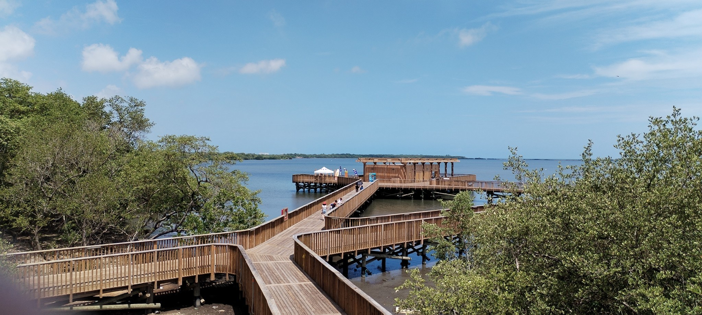

Un destino ideal para los amantes de la naturaleza y el senderismo.
La Ciénaga de Mallorquín es un atractivo turístico natural de gran importancia en Barranquilla. Es un ecosistema único donde el agua dulce del río Magdalena se mezcla con la salada del mar Caribe, formando un humedal de tipo estuario.
¿Qué hace especial a la Ciénaga de Mallorquín?
En resumen, la Ciénaga de Mallorquín es un lugar ideal para aquellos que buscan conectar con la naturaleza, disfrutar de la tranquilidad y aprender sobre la importancia de conservar nuestros ecosistemas.
Antes de empezar nuestro recorrido es importante seguir una serie de recomendaciones y precauciones para evitar sufrir malos ratos que arruinen nuestra experiencia en el recorrido.